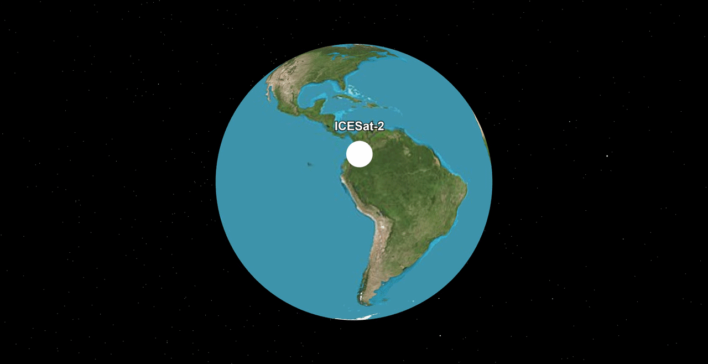

Alexander Gaskins / Software
Software
Open-source software
FuelDeep3D
An R package that classifies terrestrial laser scanning point clouds into stems, branches, foliage, and surface fuels using a PointNeXt deep learning model, and writes the fuel classes back to LAS or LAZ.
2026 · FuelDeep3D: An R package for Fire Fuels Segmentation in 3D Using Terrestrial Laser Scanning and Deep Learning. Naga, V. et al.
Co-author · Developed with Venkata Siva Reddy Naga and Carlos Alberto Silva.
R package · NASA ICESat-2
ICESat2VegR
Tools for downloading, reading, processing, visualizing, and exporting NASA’s ICESat-2 ATL03 photon data and ATL08 land and vegetation products.
The package supports photon- and segment-level analysis, spatial sampling, gridding, modeling, and integration with Google Earth Engine for mapping vegetation structure and other land attributes.
2026 · ICESat2VegR: An R Package for NASA’s Ice, Cloud, and Elevation Satellite (ICESat-2) Data Processing and Visualization for Land and Vegetation Applications. Silva, C. et al.
Co-author and contributor, with Carlos Alberto Silva, Caio Hamamura, and Cesar Alvites. Maintained by Carlos Alberto Silva.
